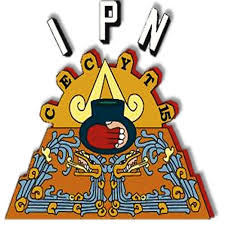

Escuelas de nivel medio superior del IPN
volver al indice
CECyT 1
El 1° de agosto de 1924 fue fundado el CECyT No. 1 con el nombre de Instituto Técnico Industrial, cuyo objetivo fue ofrecer a los jóvenes y a los obreros adultos, la oportunidad de seguir carreras técnicas como las de mecánica electricidad, automovilismo, carpintería y oficios como relojería, grabados, etc.
CECyT 5
En 1972 todas las vocacionales del IPN se convirtieron en Centros de Estudios Científicos y Tecnológicos, con base en la reforma educativa, y se les encargó cumplir una doble función: la propedéutica y la terminal. Por ello, nuestra escuela se convierte en el CECyT No. 5.
CECyT 10
Así por decreto presidencial de fecha 31 de agosto de 1971 siendo presidente el Lic. Luis Echeverría Álvarez, se formó un convenio por la Secretaría de Educación Superior y el Departamento del Distrito Federal, éste último construiría un plantel destinado a impartir la enseñanza correspondiente al ciclo escolar medio superior. Dicho plantel sería ubicado en la zona noroeste de la Ciudad de México y su administración sería encomendada al Instituto Politécnico Nacional.
El 7 de noviembre de 1972 siendo Regente del Departamento del Distrito Federal el Lic. Octavio Sentíes Gómez y en presencia del Secretario de Educación Pública Ing. Víctor Bravo Ahuja se hizo entrega al Instituto Politécnico Nacional las instalaciones correspondientes de lo que sería el Centro de Estudios Científicos y Tecnológicos en Electromecánica (CECTEM Vocacional No. 10).
CECyT 15
El origen más remoto sobre la fundación del CECyT 15 “Diódoro Antúnez Echegaray” data del año de 1965, cuando un grupo de entusiastas ciudadanos tecomiltenses tuvieron la idea de impulsar la creación de una escuela de nivel medio superior en la localidad de San Antonio Tecómitl. Este grupo de personas se integró por los señores: Quintil Villanueva Ramos, Roberto Noriega Medina, Loreto Ramos Roldán, Miguel Blancas Silva, Carlos Villanueva Yescas y Alfredo Yescas Abad.

link paginana del cecyt 15